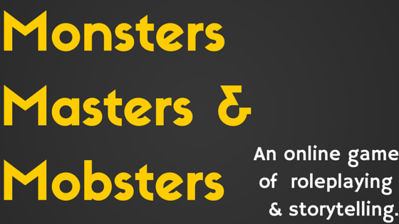

The Concept: A massively-multiplayer online role-playing and storytelling game engine using the concept of trained monsters.
Players create human characters, who then acquire monsters, train them, and compete against each other through their monsters. Broader gameplay features include:
The objectives of the game are as follows:
This system is intended to be a game engine, providing systems and infrastructure for gameplay while leaving the details to individual game players. Like other RPGs, the game provides tools and information that players can use to create characters and monsters to their liking. Players can make whatever they want of the game; the system handles the business.
The system will enable players to do the following:
There are four main aspects to playing the game:
There are other aspects of gameplay, including Breeding Monsters.
While one can play MMM just by training and battling Monsters, the full experience of the game comes with roleplaying and/or storytelling.
What is roleplaying? Roleplaying is a form of gaming in which each player has control over his character and interacts with other characters in the game. The Adventure Master roleplays all characters that are not played by human players.
In MMM, each participant plays the role of a Monster trainer. All Monsters and other human characters must be played by the staff.
What is storytelling? Storytelling is the process of developing a story where the storyteller speaks for all characters involved--his Trainer character, his Monsters, and any human characters and Monsters he encounter. When a player is doing general storytelling, he does not have to wait for a staff member to update his story. He can proceed right through it.
What is the difference? Roleplaying allows the Master and his staff to control and direct the development of events in the game. In storytelling, the player has complete control over the development of the story.
What is the planned interface? Being an online game, the game interface will ultimately manifest in a variety of versions, including mobile and smart-device versions. The first version of the game will be a web application developed and hosted in Azure.
What is the planned perspective (1st person vs. 3rd person)? The game interface will offer multiple perspectives into the game. Each player will have direct control over his own Character, Monsters and other objects. There will also be third-person perspectives with Organizations, Leagues, and other concepts.
What is the basic interactive structure? Gameplay will generally occur in "turns."
What is the "heart" of the gameplay? Interactive play will be turn-based. Players will also develop stories and media associated with their Characters and Monsters. There is also a social element, in which players will earn credits and prizes by receiving "likes" and reputation from other players.
How does multi-player work? Players will interact with other players through events such as direct competition, cooperative adventures, and organization-based intrigue and conspiracy.
How difficult is the game? The game will be easy to understand and play. Pre-teens should have no trouble mastering the basic concepts of the game. The main website will guide players through common actions and workflows. Apps for mobile devices will allow players to play the game virtually anywhere with little time commitment. Notifications through a variety of media will remind players and make it easy for them to engage.
How long will it take the average player to complete? There is no completion. MMM will grow as long as people play and develop new game objects.
The complete technical specification for the game is located at monmamo.wikidot.com. The code for the project is on GitHub in the monmamo organization.